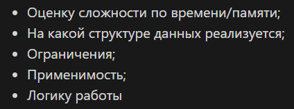
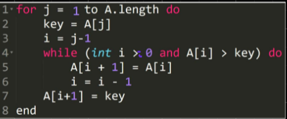
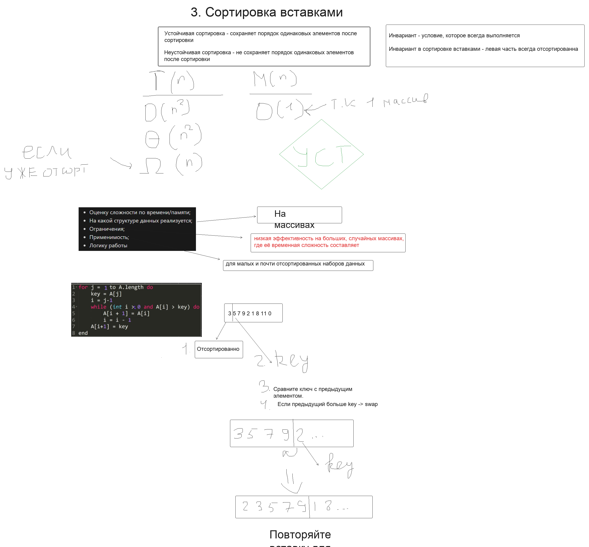

3. Сортировка вставками
Вставки, слияние, quicksort, подсчёт и поразрядная сортировка.
Материалы и примеры по пунктам
Сортировка вставками
Устойчивая сортировка сохраняет относительный порядок записей с одинаковыми ключами.
Инвариант — условие, которое сохраняется на каждом шаге алгоритма.
Инвариант вставок состоит в том, что обработанный префикс отсортирован.
Неустойчивая сортировка может поменять относительный порядок записей с одинаковыми ключами.

На массивах
На больших случайных массивах сортировка вставками в среднем выполняет Θ(n²) операций.
Метод удобен для малых и почти отсортированных наборов данных.

3 5 7 9 2 1 8 11 0
При обработке массива поддерживайте отсортированный префикс. Сравните новый ключ с предыдущим элементом. Сдвигайте строго большие элементы вправо, затем вставьте ключ на освободившееся место. Повторите для каждого следующего ключа.
Схемы и рукописные примеры
